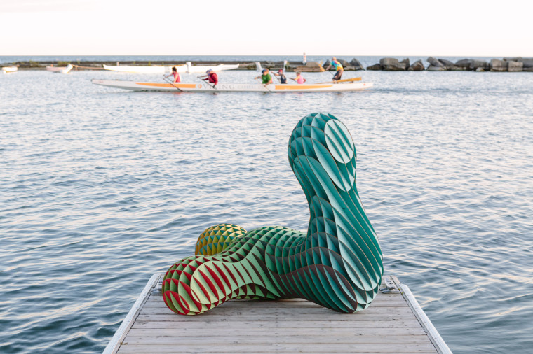
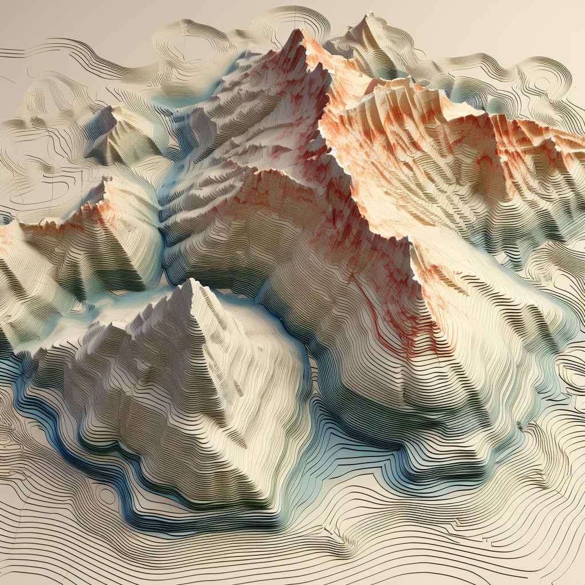

02A2: 3D Modeling & Organic Art
Lava Sculpture
The task this week was to learn how to model in Rhino, then bring that
model to life. Again, the creation needed a minimum of 30 laser-cut
parts featuring interlocking slots that ensure a secure press fit,
resistant to light shaking.
Last week, I enjoyed the challenge of creating something that I'll use
or would be happy gifting so much that I'm going to strive for this
every week. I wanted to introduce some color to this week's project too.
Learning to use Rhino this week has been very time consuming, but I am
beginning to see the powerful aspects of Rhino over Soldiworks or AutoCAD.
While I mostly followed tutorials and resources on Rhino's website this
week, I have enjoyed the visual coding process of Grasshopper. The only
considerable roadblocks I ran into is that the software is not as efficient
when it comes to rendering changes. If I changed the thickness of my
material, this would result in 2-5 minutes of processing before becoming
responsive again.
Some pieces ripped due to having very thin connections. I could have done
better at predicting this and fixing those trouble areas. I would have
also mapped the cuts on the taller pieces to be shorter and closer to the
top of the piece so that it didn't create such floppy tabs. This endes up
being a highly complicated puzzle, so I would mark pieces with their number
if I were to do this again. I'm happy with the shape and all that I had to
learn in Rhino to accomplish what I had in my mind at the outset. All
together, there are 58 laser-cut pieces.
Tools, Materials, & Credits
- Rhino
- Laser Cutter
- Single-Ply Chipboard
- Idea Source
- Turning a Mesh Object Into a Sub-D
- Modeling a 3D Puzzle From an Object
- Turning Modeled Pieces Into Flattened Laser Cutter Lines
Process
I found this art project and loved the type of shape and the gradient colors.
I've also been looking for an excuse to learn how to make topographical models like this.
Generated by me, with Midjourney 4.1, in 2023
Digital Design
I started by creating a blocky mesh structure, after hours of trying various techniques, then I turned that shape into a Sub-D by following this tutorial.
This is where Rhino became really helpful. Each slot needed to be a
different depth depending on the shape of the piece, so I used Grasshopper
to determine those depths, create a bounding box that's ties to the
material thickness, and cut slots into each piece based on those parameters.
I left the cut size slightly larger than snug for an individual piece
so that it wouldn't be impossible to slot 1 piece into 5 later on.
See my
Rhino File and
Grasshopper File.
 This is what my shape looked like after using Grasshopper to divide it
into x and y slices.
This is what my shape looked like after using Grasshopper to divide it
into x and y slices.
Thank you to Rhino for having such a great tutorial on 3D puzzles. This helped me figure everything out much quicker.
I'm sure there is a programming solution to mapping pieces onto a piece of material in the most efficient pattern and I would have liked to spend more time finding this option but figured manually arranging pieces was fastest for now.
Fabrication
Cutting was much faster this week as I kept scale in mind during design.
I numbered each piece in Rhino, but didn't want numbers to be visible on the final
assembly, so I used my digital model as a guide for this time consuming puzzle.


The puzzle would have been more fun to do in recreation than under a deadline and the pieces would benefit from more time being spent making sure there aren't any thin connections that make them flimsy to handle.
I think it turned out good enough to enjoy on display.